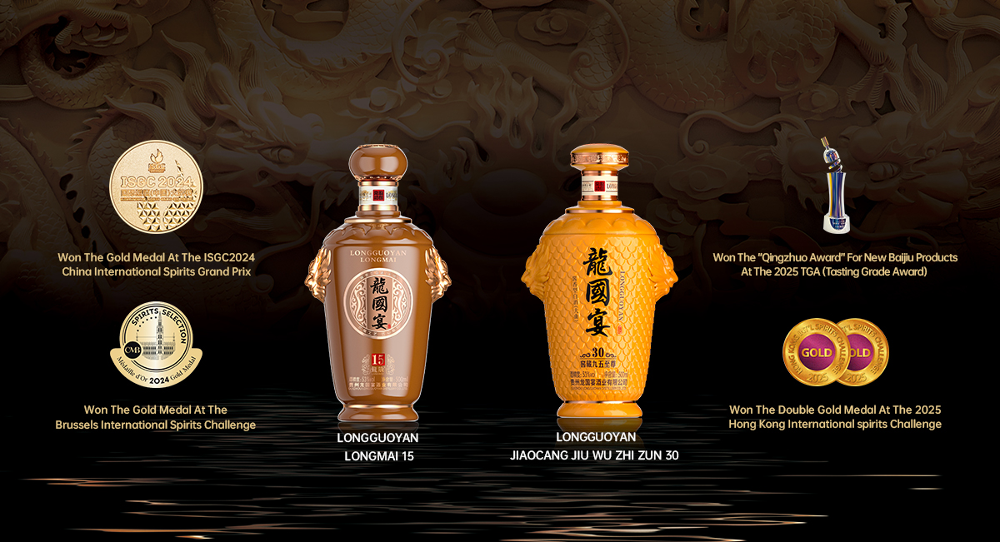

COMPANY PROFILE
Guizhou Longguoyan Distillery Co., Ltd. is rooted in Maotai Town, the world-renowned core region for premium sauce-aroma liquor production.
From raw material selection to multi-cycle fermentation and cellar aging, every step follows disciplined craftsmanship and strict quality standards.
Longguoyan combines traditional brewing wisdom with modern brand strategy to deliver premium spirits across domestic and international markets.
